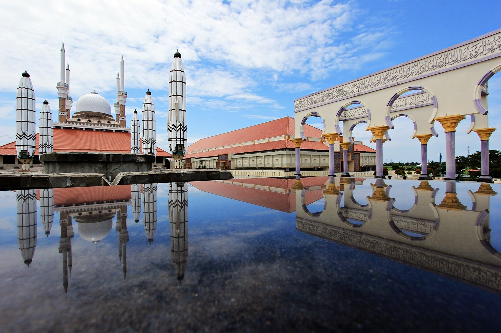

Sejarah

Pada akhir abad ke-15 M ada seseorang ditempatkan oleh Kerajaan Demak, dikenal sebagai Pangeran Made Pandan, untuk menyebarkan agama Islam dari perbukitan Pragota. Dari waktu ke waktu daerah itu semakin subur, dari sela-sela kesuburan itu muncullah pohon asam yang arang (bahasa Jawa: Asem Arang), sehingga memberikan gelar atau nama daerah itu menjadi Semarang.
Geografis

Kota Semarang terletak antara garis 6° 50' - 7° 10' Lintang Selatan dan garis 109° 35’ - 110° 50' Bujur Timur. Dibatasi sebelah Barat berbatasan dengan Kabupaten Kendal, sebelah Timur berbatasan dengan kabupaten Demak, sebelah Selatan berbatasan dengan kabupaten Semarang dan sebelah Utara dibatasi oleh Laut Jawa dengan panjang garis pantai meliputi 13,6 Km. Ketinggian Kota Semarang terletak antara 0,75 sampai dengan 348,00 di atas garis pantai.
Wisata
Masjid Agung Jawa Tengah
Masjid Agung Jawa Tengah (bahasa Jawa: ꦩꦱ꧀ꦗꦶꦢ꧀ꦄꦒꦼꦁꦗꦮꦶꦠꦼꦔꦃ, translit. Masjid Agêng Jawi Têngah) adalah masjid yang terletak di Semarang, provinsi Jawa Tengah, Indonesia. Masjid ini mulai dibangun sejak tahun 2001 hingga selesai secara keseluruhan pada tahun 2006. Masjid ini berdiri di atas lahan 10 hektare. Masjid Agung diresmikan oleh Presiden Indonesia Susilo Bambang Yudhoyono pada tanggal 14 November 2006. Masjid Agung Jawa Tengah (MAJT) merupakan masjid provinsi bagi provinsi Jawa Tengah.
Umbul Sidomukti

Kawasan wisata umbul Sidomukti merupakan salah satu Wisata Alam Pegunungan di Semarang, berada di Desa Sidomukti Kecamatan Bandungan Kabupaten Semarang. Kawasan wisata ini dengan didukung fasiltas & Servis: Outbond Training, Adrenalin Games, Taman Renang Alam, Camping Ground, Pondok Wisata, Pondok Lesehan, serta Meeting Room.
Informasi Lainnya
| Negara | Indonesia |
|---|---|
| Tanggal Jadi | 2 Mei 1547 |
| Bahasa Daerah | Jawa |
| Luas Wilayah | 378,3 Km2 |
| Kode Telepon | +62 24 |